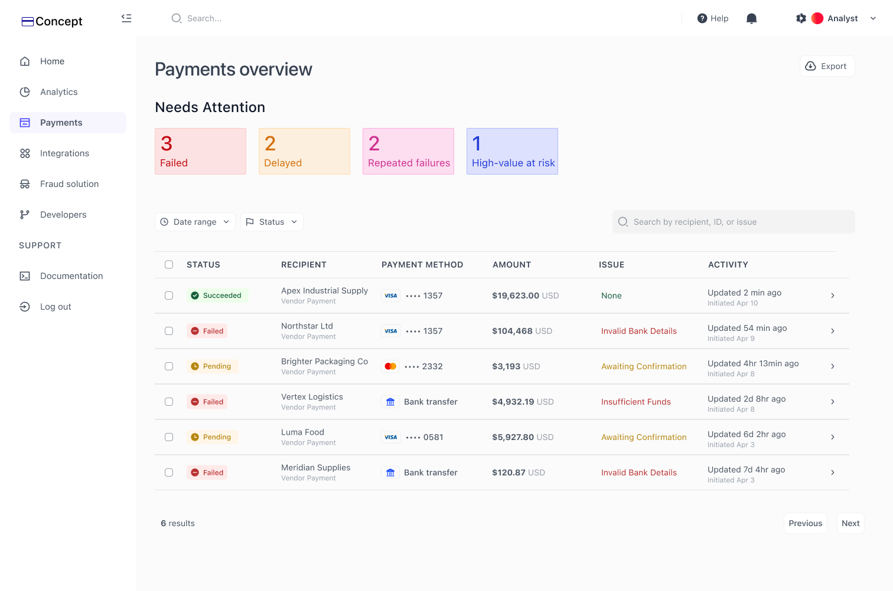
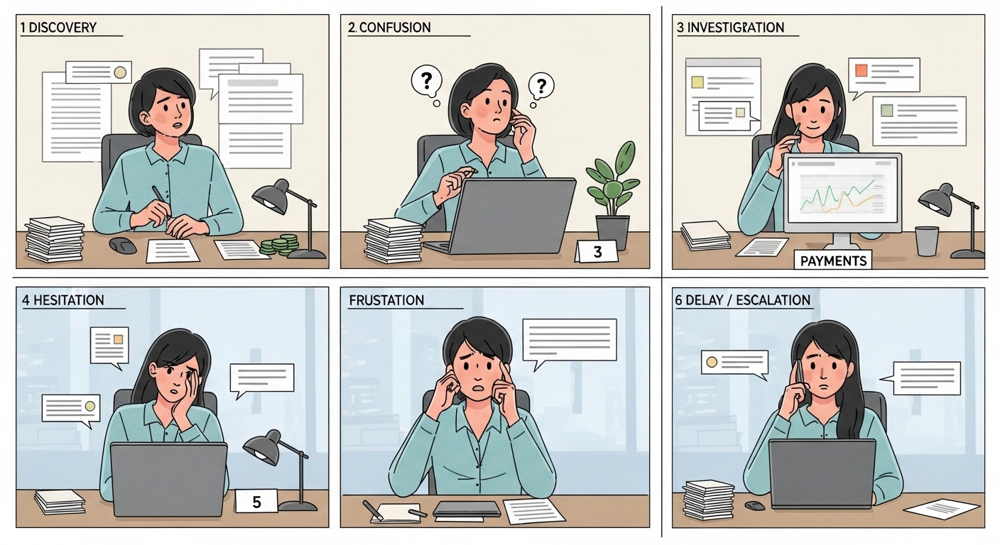

Independent Project · Product Design · 2026
designing for when payments don’t go as planned
Most payment experiences are designed for the person sending money. I wanted to design for the person dealing with what happens after.
at a glance
Designed for ops
Focused on a payments operations analyst rather than a consumer sending money.
Built for action
Structured the experience around what happened, why it happened, and what to do next.
Designed for ambiguity
Included edge cases like delayed transactions where the right action is not immediately obvious.

Final concept: a payments operations dashboard designed to prioritize, investigate, and resolve unclear transactions.
Understanding the role
I picked this user on purpose.
This project started as a challenge to myself. I’ve spent a lot of time designing for end users — consumers, students, and broad audiences — but I wanted to push into a space that felt less familiar and more operational.
So instead of designing another consumer payments app, I focused on a payments operations analyst — someone responsible for monitoring, investigating, and resolving unclear or failed transactions behind the scenes.

Storyboard: mapped the analyst’s experience from noticing a flagged transaction to deciding whether to escalate or resolve it.

User flow: alert → investigate → interpret → decide → act.
Competitive scan
I also looked at how payments are handled in consumer-facing products today.
I studied payment experiences from Revolut, Wells Fargo, and Chase to understand how current systems communicate transaction status, history, and failure. These flows are designed well for visibility — but not for resolution.
What current flows do well
Surface transaction status clearly
Show searchable history and receipts
Support awareness at a glance
Handle happy-path confirmations well
What was missing
Little context around why failures happened
Few clear recovery actions
No prioritization layer for what needs attention first
Support and resolution often happen outside the transaction itself
Insight
Status isn’t the same thing as understanding.
The more I looked into the workflow, the clearer the gap became: most systems are good at showing status, but weak at supporting decisions.
A label like pending or failed doesn’t actually help someone do their job. What analysts need is context, clarity, and a clear next step.
System overview
Designed to prioritize what needs attention before analysts start scanning rows.
Instead of showing every transaction equally, the system surfaces urgency first. The goal wasn’t more visibility — it was faster decision-making.

Surfaces what needs attention first
Analysts can immediately see which categories require action before scanning the full table.
Separates priority from system status
“Needs Attention” is a derived layer for urgency, not a replacement for raw states like pending or failed.
Short, scannable issue labels
Keeps the table readable while moving detailed explanations into the investigation panel.
Designed for scanning, not reading
Status, issue, and activity are structured to support fast triage without opening every transaction.
Surfaces what needs attention first
Analysts can immediately see which categories require action before scanning the full table.
Separates priority from system status
“Needs Attention” is a derived layer for urgency, not a replacement for raw states like pending or failed.
Short, scannable issue labels
Keeps the table readable while moving detailed explanations into the investigation panel.
Designed for scanning, not reading
Status, issue, and activity are structured to support fast triage without opening every transaction.

Investigation panel: turns a transaction detail view into a decision-making workflow.
This panel is where the project became a resolution system rather than just a dashboard. Once an analyst clicks into a transaction, they need four things immediately: what happened, why it happened, what to do next, and what has already happened in the system.
What it explains
Status and issue in plain language
A recommendation grounded in the current situation
Timeline context for auditability
What it supports
Fast triage without leaving the page
Reusable action patterns like Request update and Escalate
A clear transition from investigation to action
Edge case
Not every issue is a clear failure.
Some of the hardest cases are the ones that sit in between — where a payment is technically still pending, but something feels off. I wanted the system to support that ambiguity without collapsing everything into success or failure.

Delayed edge case: keeps the system status accurate while still surfacing that the transaction may need attention.
Instead of changing the system status, I used a derived label — Delayed — to signal urgency. That lets the product stay accurate while still helping analysts notice when a pending transaction has exceeded expected processing time.
Prototype
I prototyped this like a workflow, not a slideshow.
Once the core UI was in place, I focused on the state transitions that make the system feel real: clicking a Needs Attention card filters the table, clicking a row opens the investigation panel, and actions like Request update or Escalate are framed as part of an operational workflow rather than isolated clicks.
Prototype: embed your Figma flow here once ready, or replace this with a short GIF if you want more control.
Reflection
This project pushed me to think beyond interfaces.
Designing for operations meant designing for ambiguity, time pressure, and decision-making — not just transaction flows.
What I liked most about this project was that it made me think in systems: how language scales, how urgency is surfaced, and how a product can support action without pretending every situation is equally clear.
01
Status is not the same thing as urgency.
One of the strongest ideas in this project was separating raw system state from the prioritization layer above it.
02
Good decision support is different from more information.
The goal wasn’t to surface every possible detail — it was to structure the right information at the right moment.
03
This is a space I want to keep exploring.
It pushed me outside my comfort zone in a way that felt useful, and made me more interested in designing for complex, high-stakes systems.